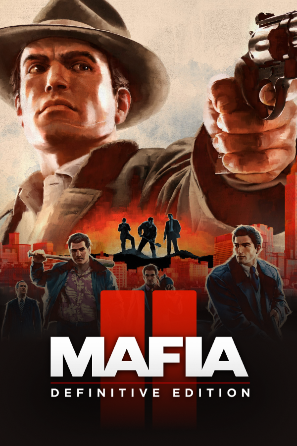

Mafia II: Definitive Edition
Mafia II: Definitive Edition
Detalhes
|  | |
| Tempo de jogo | Não Jogado |
| Última Atividade | Nunca |
| Adicionado | 09/03/2025 22:47:31 |
| Modificado | 10/03/2025 1:36:38 |
| Status de Conclusão | Not Played |
| Biblioteca | Gog |
| Fonte | GOG |
| Plataforma | PC (Windows) |
| Data de Lançamento | 24/08/2010 |
| Pontuação da Comunidade | 71 |
| Avaliação da crítica | 70 |
| Pontuação do Usuário | |
| Gênero | Action-adventure |
| Desenvolvedor | 2K Czech Hangar 13 |
| Editor | 2K |
| Funções | Single Player |
| Links | Wikipedia |
| Tag | [EMT] Video Micro missing |
Descrição
Mafia II is a 2010 action-adventure game developed by 2K Czech and published by 2K. It was released on 24 August 2010 for PlayStation 3, Windows, and Xbox 360. The game is a standalone sequel to 2002's Mafia, and the second installment in the Mafia series. Set within the fictional city of Empire Bay from 1945 to 1951, the story follows Vito Scaletta, a young Sicilian-American mobster and war veteran, who becomes caught in a power struggle among the city's Mafia crime families while attempting to pay back his father's debts and secure a better lifestyle.
The game is played from a third-person perspective and its world is navigated on foot or by vehicle. The player character's criminal activities may incite a response from law enforcement agencies, measured by a "wanted" system that governs the aggression of their response. Development began in 2003, soon after the release of the first Mafia game. Upon release, Mafia II received positive reviews, with praise particularly directed at its story, characters, and gameplay; however, the restrictive world design and lack of certain features present in other sandbox games were criticized.
A version of the game including all previously released downloadable content, entitled Mafia II: Director's Cut, was released by Feral Interactive in December 2011. A sequel, Mafia III, developed by 2K Czech's successor Hangar 13, was published in October 2016. To coincide with the remake of the first game of the series, Mafia II: Definitive Edition, a remastered version of the game co-developed by D3T and Hangar 13, was released by 2K on 19 May 2020, to mixed critical reception. This Definitive Edition was later bundled in the Mafia: Trilogy, released on 25 September 2020.